Airlock User Manual
Airlock is a broadcast delay platform for video and audio. A delay channel buffers a live programme feed for a configurable window and re-transmits it — giving master control the time to dump or censor offending content before it goes to air.
- Video delay channels ride NDI: the feed arrives over the network, is delayed, and is re-sent as a new NDI source — with SCTE ad-break triggering, pre/post censor, per-channel audio processing, and an optional SRT/H.264 contribution encoder.
- Audio delay channels are broadcast profanity delays on professional sound hardware (ASIO on Windows — e.g. the Axia IP-Audio driver — or ALSA on Linux), with cough and censor controls, dayparted fill, a post-censor output and a mix-minus studio return.
Around both kinds sit Axia Livewire GPIO panel integration, delayed data routing, alerting, primary/backup redundancy, and a runtime scripting engine — all managed from one web console.
This manual covers day-to-day operation and administration. For deployment
architecture and design rationale see docs/ in the source tree; for the
scripting API see docs/scripting-guide.md.
1. Core concepts
A channel is one delay path. A server runs any mix of the two kinds, subject to licence seats:
- Video channels receive an NDI source (
<source> → Airlock <name>) and re-send it, delayed, under the NDI nameAirlock <name>. They are operated from the Video console (§§3–5). - Audio channels are profanity delays on a sound-card pair (ASIO on Windows — e.g. the Axia IP-Audio driver — or ALSA on Linux). They have their own state machine (Idle → Building → InDelay → Exiting), command set (Build / Dump / Dump all / Exit / Cough / Censor) and console page — all in §9.
The rest of this section describes the video channel model. A video channel is always in one of four states:
| State | Badge colour | Meaning |
|---|---|---|
| Live | green | Straight-through relay; no delay in the path. |
| Building | amber | The fill is playing to air while the delay buffer records the live feed. |
| Delayed | blue | Programme airs behind live by the buffer depth. The protection window is open. |
| RollingOut | orange | The delay is unwinding back to live. |
The transitions are driven by three transport commands:
- Build — start delaying. Airlock plays the channel's fill (or freezes the last live frame) while the buffer fills to the configured window.
- Roll out — return to live. The buffered content drains and the return to live ends in a deliberate forward jump cut — content received while the buffer drains is discarded (accepted design AIR-7).
- Dump — the protection action. The buffer is flushed so the offending content never airs; a reviewable dump clip is written and alert emails go out. Audio is faded at the flush so nothing clicks on air.
Two behaviours worth knowing before you operate:
- Source loss: if the input NDI feed disappears, the output does not stop —
Airlock self-paces and holds the last good frame (raising
ALARM_SOURCE_LOST) so downstream receivers never unlock, and resumes cleanly when the source returns. - Watermarking, not blocking: licensing never blocks the delay. Channels without a licence seat (including every channel on an unlicensed server) build and run normally — their output simply carries a burnt-in watermark and audio tones (§14). BUILD, ROLLOUT and DUMP are never licence-refused.
2. Getting started
Requirements
- For video channels: the NDI runtime on the server (without it video
channels run in ENGINE-SIM, a synthetic demo mode; the footer shows which),
and ffmpeg/ffprobe for fill conforming, previews and dump-clip
transcoding (
FFPROBE_PATH/FFMPEG_PATHif not on PATH; the footer and the Fills page warn when missing). - For audio channels: a professional sound device — an ASIO driver on
Windows (e.g. the Axia IP-Audio driver) or ALSA on Linux — with enough
channels for the main pair plus any post-censor and mix-minus return pairs.
The
simbackend needs no hardware (demo/test). - A disciplined host clock (NTP/PTP) — audit timestamps, outgoing timecode and dayparted schedules depend on it.
Installing
On Windows, the MSI installer sets Airlock up as a Windows service: the
installer's Configuration page asks for the web console port (default
8080) and, optionally, a licence serial (leave blank to evaluate —
unlicensed servers run fully functional with watermarked outputs,
§14); unattended installs can pass WEBPORT=n SERIAL=XXXX
to msiexec /qn. The installer opens firewall rules for the web port and for TCP
control (9350) and anchors the database and logs to %ProgramData%\Airlock.
A supplied serial is activated online at the service's first start (with a
daily retry while the licensing server is unreachable), so offline installs
still complete. Development/console runs (dotnet run) serve on
http://localhost:5000 by default and keep their data beside the executable
unless --DataDir says otherwise.
First sign-in
Open the console (http://<server>:<port>). On first boot, when no users
exist, Airlock creates the bootstrap account admin / airlock-change-me
(also logged loudly at startup and audited). Sign in and change it immediately
via Account → Change password.
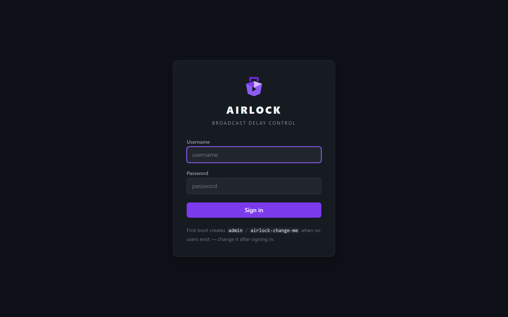
Sign-in is rate-limited to 5 attempts per minute per IP. When LDAP or OIDC SSO is configured (§13.3), directory accounts sign in on this same form (LDAP) or via the SSO button; the internal login always remains available as break-glass.
The console at a glance
- Top navigation:
- Operations — the view-only dashboard over everything (§3);
- Video — Delay channels (the video console), Encoders, Fills, Dump clips;
- Audio — Delay channels, Fills & schedules, Censor schedules;
- Data Receivers — TCP Servers, TCP Clients, UDP Servers, Routing, Axia GPIO;
- Scripting (admin);
- Server (admin) — General, Email (SMTP), Authentication, Users, Alert groups, License, Redundancy, API access;
- Account — Change password, Sign out.
- Banners (under the header): an amber/red licence banner while the
licence needs attention (admins get a Manage license link); an amber/red
redundancy banner on a backup that has lost its master (or been taken
over); a sky-blue note on a synced backup — "Backup — configuration and
controls are managed by the master at
" (§13.7). - Footer status pills: NDI runtime, media tooling (ffmpeg), watchdog
state, licence state — plus a Redundancy pill (
Redundancy: primary/Redundancy: backup Synced…) when a redundancy role is configured.
Live numbers (meters, depth, states, encoder stats) stream over a single binary WebSocket at ~10 Hz, so what you see is effectively real time.
3. Operations dashboard and the Video console
Operations — the view-only dashboard
Operations is a read-only overview of the whole server — nothing on it changes state. It is banded into Input / output video (one tile per video channel: state badge, source line, input/output previews, meters, compact Depth/Drops/Holds counters, alarm strip), Encoder video (one tile per enabled encoder with its live preview and stats), Audio (one tile per audio channel with its depth bar and meters) and Audit (the latest 25 audit rows, refreshed every 3 s — every command from every interface lands here). Clicking any tile jumps to the owning control page and highlights the card.
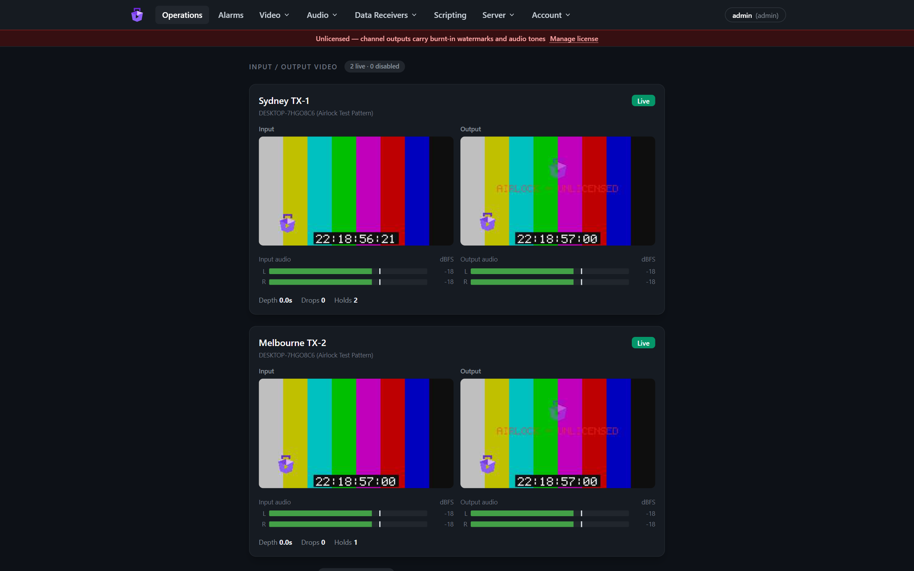
Video → Delay channels — the video console
The control surface lives on Video → Delay channels: the full channel cards with transport buttons, plus the admin + Add channel control in the page header. Video views show video channels only — audio delays live entirely under the Audio menu (which has its own + Add channel, pre-set to the audio kind).
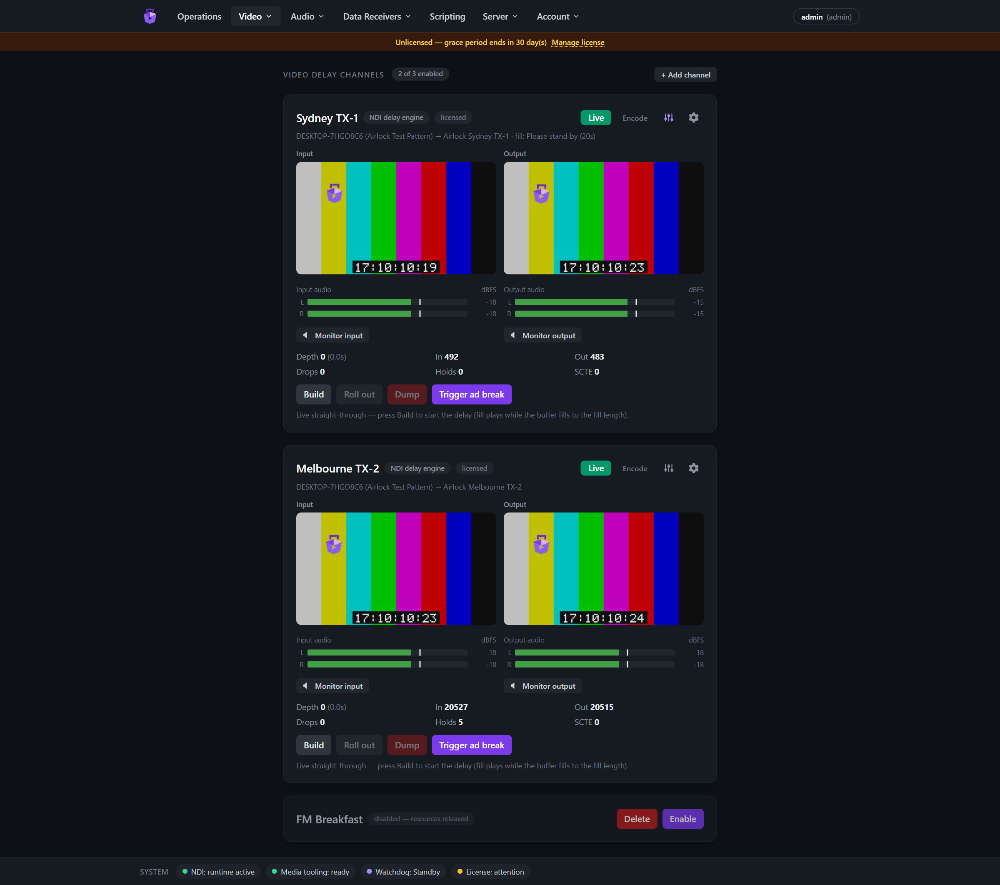
Reading a card, top to bottom:
Header — channel name; engine badge (
NDI delay engine, orengine-simwithout the NDI runtime); the licence-seat pill (greylicensed, or an amber UNLICENSED button — see §14); the state badge; the Encode pill (§8); the sliders icon that opens audio processing (§5); and the gear that opens channel settings.Source line —
<NDI source> → Airlock <name> · fill: <fill name>.Confidence monitors — Input and Output previews (~5 fps). The output preview shows what actually airs, including any watermark. In Delayed the output header reads "Output — delayed N.Ns".
Audio meters — L/R RMS bars with peak-hold, −60…0 dBFS, turning amber at −9 and red at −3.
Monitor input / Monitor output — click to listen in the browser (Opus over WebSocket; needs a WebCodecs browser — Chrome/Edge/Safari 16.4+). One audible tap per channel; a green MONITORING tag and a volume slider appear while live:
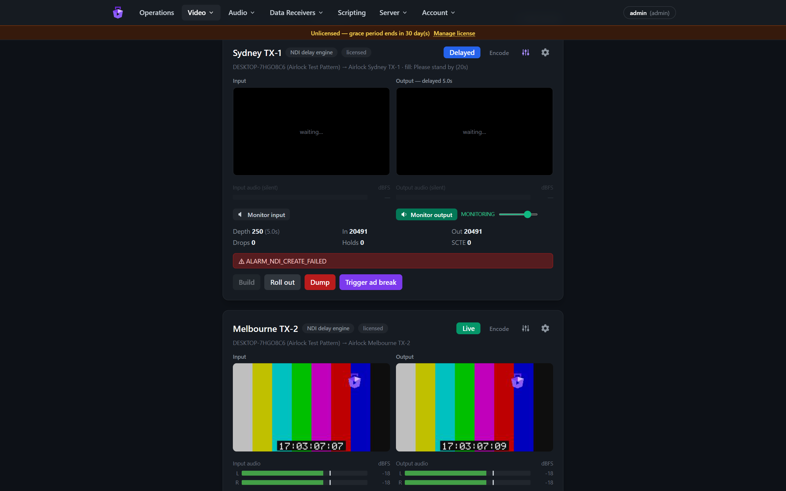
Counters —
Depth(frames and seconds),In/Outframe counts,Drops(red when non-zero),Holds(hold-last-frame repeats),SCTE(splices inserted).Alarm strip — active alarms in red, e.g.
ALARM_SOURCE_LOST(§17).Transport buttons — Build / Roll out / Dump / Trigger ad break (§4).
Adding, disabling and deleting channels (admin)
Click + Add channel in the Video delay channels header, type a name (max 24 characters) and pick the kind — video delay or audio delay. Enter submits, Esc cancels. Audio channels appear under Audio → Delay channels.
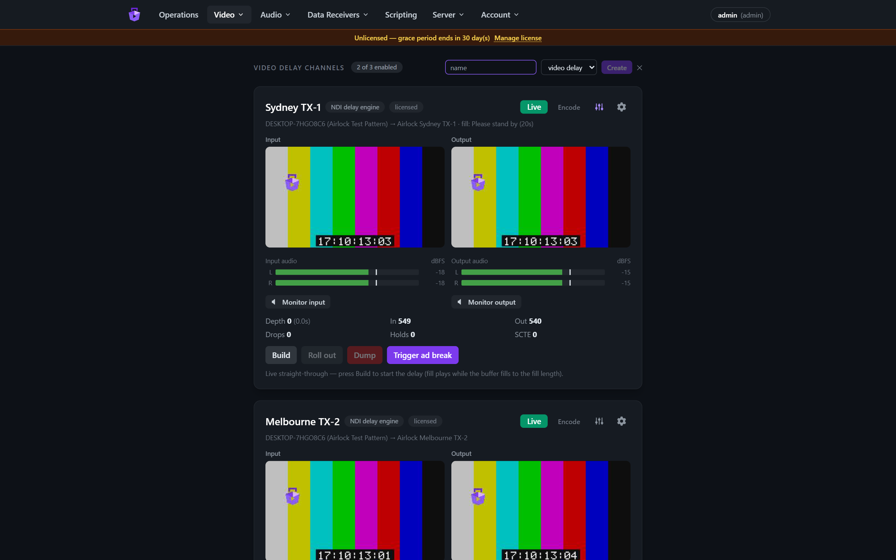
Disabling a channel (gear → Disable channel) stops it and releases its frame pool, engine and NDI receiver; the card collapses to a dimmed stub with Enable and Delete buttons (a dimmed tile also shows on Operations). Deletion is only possible while disabled and removes the channel's GPIO mappings, schedules and data routes with it.
4. Operating the delay
All transport commands live on Video → Delay channels (the Operations dashboard is view-only).
Build
Build is enabled only while Live. Press it and:
- the output switches to the channel's fill (or freezes the last live frame in freeze mode) while the buffer records the live feed;
- the state badge turns amber (Building) and the depth counter climbs;
- when the delay window is reached, the channel drops into Delayed and the programme airs behind live.
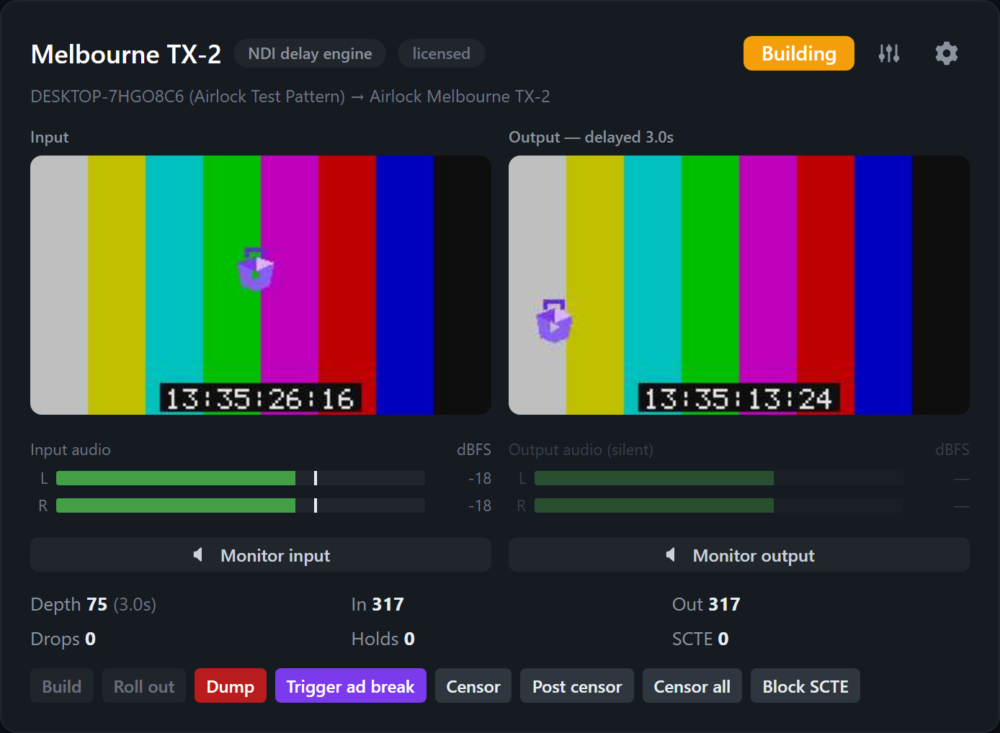
The delay window depends on the delay mode: with Delay to asset it is the fill's full length; with Delay to time it is a fixed window (§5).
Delayed — the protection window
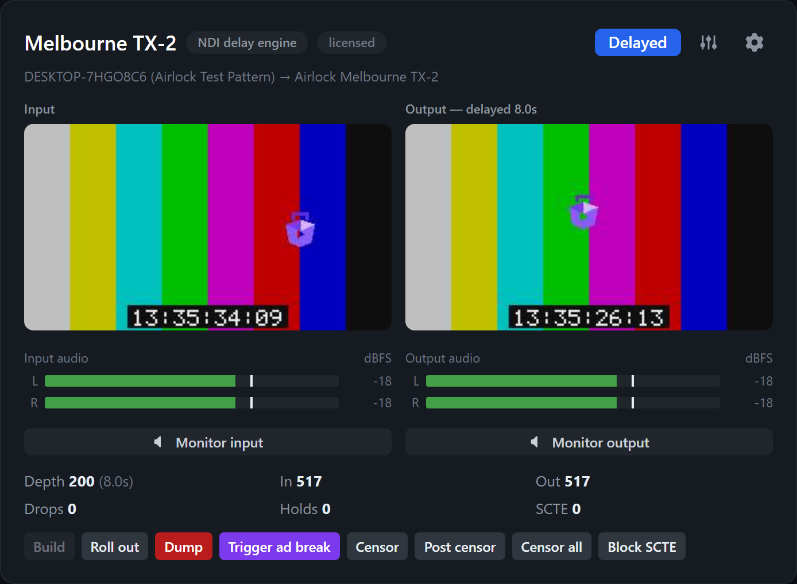
In Delayed the operator can:
Dump — flush the buffer. A confirmation dialog ("DUMP
? The buffer flushes and the channel returns to live." ) guards the button. The flushed content is written as a dump clip and alert-group emails go out (§6).Roll out — unwind the delay back to live at the end of protected programming. The badge turns orange (RollingOut) while the depth drains, ending in the forward jump cut:
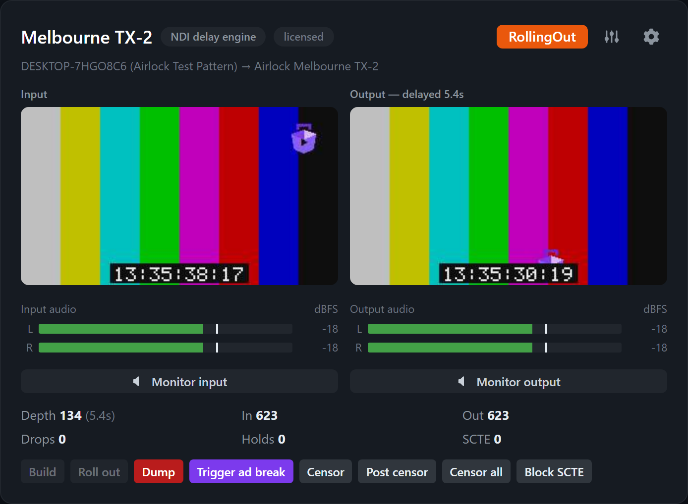
Trigger ad break — fire the
adbreakSCTE trigger template: one press emits SCTE-104 in the NDI output's VANC and (if the encoder runs) PTS-aligned SCTE-35 in the transport stream, with pre-roll.
Censor — bleep without dumping
Sometimes a word needs to go but the pictures don't: video channels carry the profanity-delay censor, which replaces a span of the programme audio with tone (or silence) while the video passes through untouched — no buffer is lost, unlike Dump. Two controls sit beside the transport buttons:
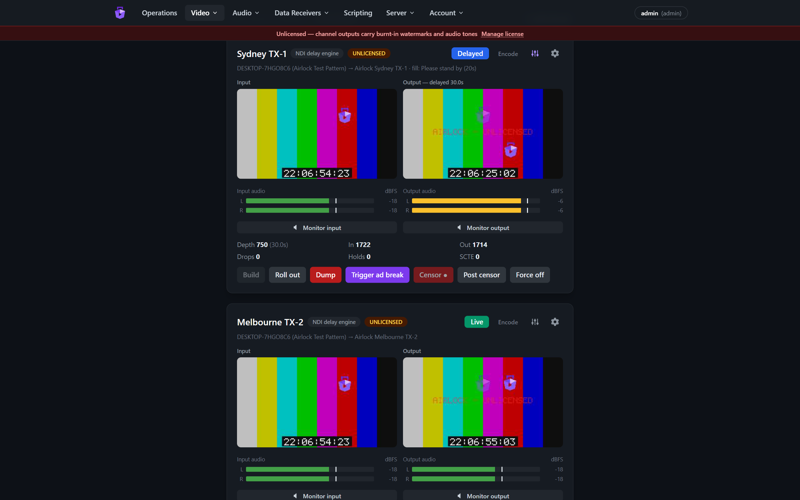
- Censor — a hold: click to open, click again to release (the button reads Censor ● and pulses while engaged). The censored span is back-dated — a press marks from censor size + pre pad before the moment you pressed, so operator reaction time is covered — and holds post pad past the release to cover pulling off early. On a delayed channel the tone airs when those frames reach the output (the protection rides the delay); pressed while Live it applies immediately. Repeated or held presses extend one merged span.
- Post censor — replaces the on-air output audio immediately while engaged, regardless of delay depth — the last-ditch control when something is already at the output tap.
- Force off — appears while anything is engaged; clears every censor state, including marked spans that haven't aired yet.
Censor works in every channel state and is never licence-gated. The
censorActive / postCensorActive GPO lamp sources follow these controls
(§10), and a hold timeout (default 30 s,
configurable per channel) auto-releases a censor whose release edge never
arrives — a GPI button whose "off" was lost in a dropped connection can't
leave the bleep latched on air.
Simulating source loss (engine-sim)
Without the NDI runtime, channels run against a synthetic source and admins
get Kill sim source / Restore sim source buttons to rehearse the
source-loss behaviour. With real NDI, killing the source upstream has the same
effect — hold-last-frame plus ALARM_SOURCE_LOST:
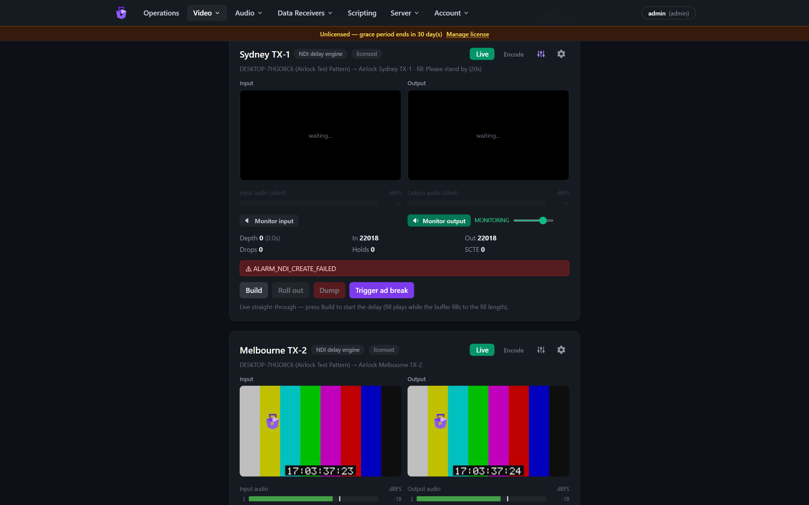
5. Channel configuration
Open the gear on a channel card. The settings modal is tabbed — Source & name · Fill · Delay mode · Censor · Feed stats. Changes require the admin role (Feed stats is visible to everyone); source, fill and delay-mode changes are only permitted while the channel is Live.
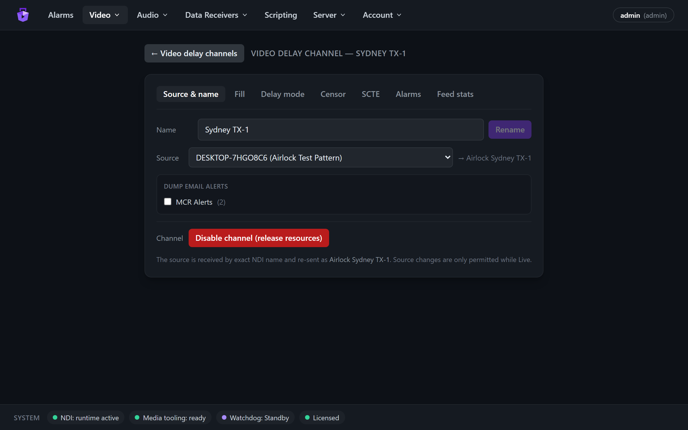
Source & name
- Name — rename the channel (letters/digits/space/
- _ ., max 24). The NDI output name (Airlock <name>) follows at the next engine restart. - Source — a dropdown of NDI sources currently visible to the network finder, plus "Colour bars + tone (built-in)": an in-process test generator (SMPTE-style bars, bouncing Airlock mark, 1 kHz −18 dBFS tone) that switches on and binds in one click and persists across restarts. Handy for commissioning and the screenshots in this manual.
- DUMP email alerts — tick the alert groups to notify on DUMP (§6).
- Disable channel (release resources) — see §3.
Fill — static assignment and dayparted schedule
The static Fill picker offers the ready fill assets (§7) or "Freeze frame (no fill — delay to time)" to build against a freeze of the last live frame instead of playing fill. A fill must fit the channel's maximum delay depth — the server refuses an over-length assignment rather than risk the buffer.
Below it, the Dayparted fill schedule swaps the effective fill by time of day and day of week — e.g. a breakfast slate on weekday mornings, the station default otherwise:

- Each row is fill × days × HH:MM–HH:MM window. While an enabled row's
window matches the current server time, that row's asset is the channel's
effective fill; a green "active now:
" pill shows which one won. - Overlapping rows: the first matching row wins (deterministic — unlike the audio fill schedules, which round-robin per build). When no row matches, the static assignment returns.
- Boundary changes apply only while the channel is Live (the fill is a standing assignment the engine conforms once, not a per-build pick). A crossing that happens mid-delay is retried and lands when the channel next returns to Live.
Delay mode
- Delay to asset — the delay window equals the fill's full length (a 20 s fill gives a 20 s delay).
- Delay to time — a fixed window in seconds (0.25 s steps, capped at min(channel max depth, global cap — shown as "cap Ns")). A longer fill is cut short at the window; a shorter fill either loops (checkbox) or plays once and freezes its last frame, silent, until the window is reached.
- Changes Apply while Live and take effect at the next Build.
Censor parameters
The Censor tab tunes the reaction-time compensation behind the card's Censor buttons (§4):
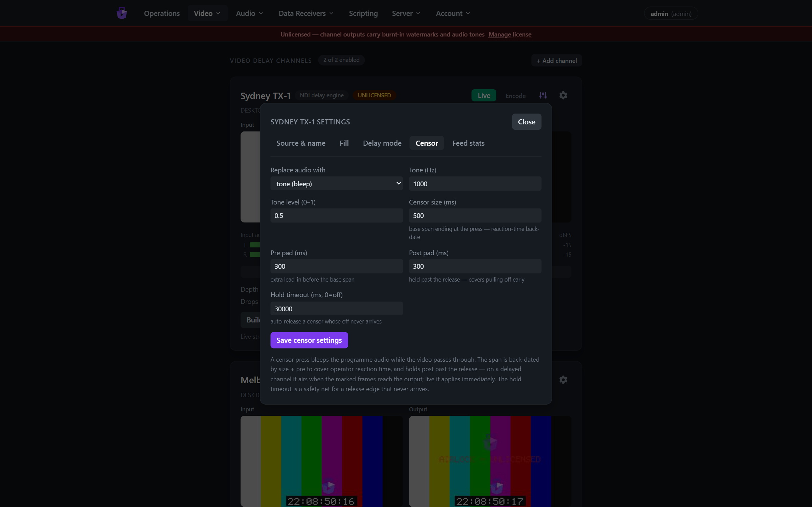
- Replace audio with —
tone (bleep)orsilence; Tone (Hz) and Tone level (0–1) shape the bleep. - Censor size (ms) — the base span ending at the press (the reaction-time back-date; default 500).
- Pre pad (ms) — extra lead-in before the base span (default 300).
- Post pad (ms) — held past the release, covering pulling off early (default 300).
- Hold timeout (ms, 0 = off) — auto-release a censor whose off never arrives (default 30000).
Feed stats
A read-only reference for the bound feed — useful when confirming what an upstream source is actually delivering:

- Incoming feed: source name, signal state (● receiving / ● lost), resolution, frame rate (fractional rates shown with their num/den, e.g. "29.97 fps (30000/1001)"), scan, pixel format (FourCC), aspect, frames received.
- Outgoing feed: the NDI output name, the re-sent format, frames sent, drops, hold repeats and the current delay depth.
- The format is locked from the source's first frame at bind and re-locks when the source or engine restarts; the output is re-sent at the same raster.
Channel audio processing (trim · EQ · compressor)
The sliders icon in the card header (tinted violet while active) opens the audio-processing modal — a stereo-linked processing chain on the channel's delayed PGM output. Changes apply live on air (there is no Save button); the encode branch keeps its own R128 loudness chain. Requires the operator role.
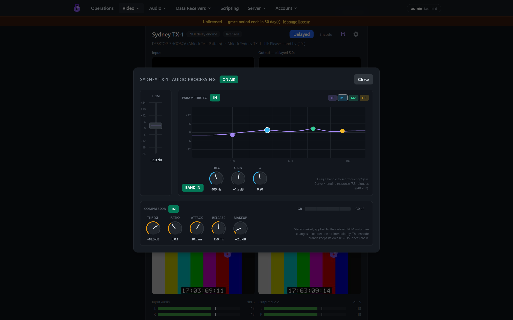
- Master On air / Bypassed toggle.
- Trim — ±24 dB fader with centre detent (double-click returns to 0).
- Parametric EQ — In/Out toggle; four bands LF · M1 · M2 · HF with a draggable response-curve editor (the curve is the actual engine response — RBJ biquads at 48 kHz) and per-band Freq / Gain / Q knobs.
- Compressor — In/Out toggle; Thresh / Ratio / Attack / Release / Makeup knobs and a live GR (gain-reduction) meter fed from telemetry.
6. DUMP alerts, clips and alert groups
Every DUMP:
- Flushes the buffer — the offending span never airs (audio is faded at the splice, so the exit is clean);
- Writes a dump clip of the flushed content for compliance review;
- Emails the channel's alert groups (when SMTP is configured) with the channel, who dumped and from which interface, the time, the flushed depth, and a login-protected deep link to play the clip in the console.
Video → Dump clips lists every clip (auto-refreshing): when, channel,
duration, who/via, and status — writing (violet) while the file is being
finalised, ready (green) once playable as MP4, raw (amber) for
audio-channel WAV dumps.
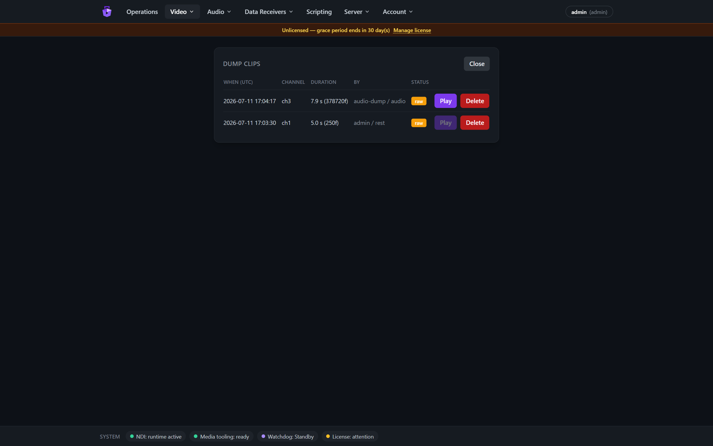
Play opens the clip player; alert-email links open the same player after login:
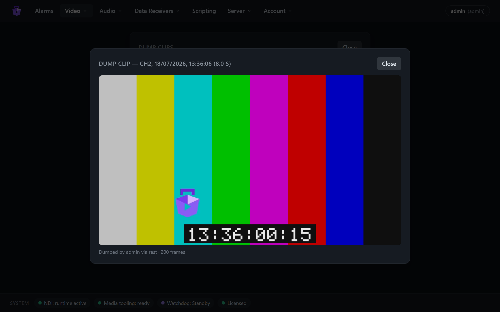
Alert groups (Server → Alert groups, admin) are named recipient lists (one email per line or comma-separated). Assign any number of groups to each channel in its settings. Groups are emailed on DUMP, and — if subscribed — on alarms (below).

6.1 Alarm emails
Alarms (video source loss, delay engine faults, encoder down, A/V offset drift, audio delay down, audio silence) can email alert groups when they go active and again when they restore. Routing needs both halves:
- On the group (Server → Alert groups) — tick the alarm categories the group cares about (Video delay, Encoding, Audio delay, System) and whether it gets Email on active and/or Email on restored.
- On the channel — tick the group under Alarm email alerts in the channel's settings (video) or the audio card's Alarms tab (audio). This assignment is separate from the DUMP alert-group assignment. A channel with no alarm groups assigned sends no alarm emails.
Emails are debounced (Server → Email): an alarm must persist (default 15 s) before the ACTIVE email, must stay clear (default 30 s) before the RESTORED email (which includes the outage duration), and a flapping alarm is throttled by a per-alarm cooldown (default 300 s). Momentary alarms (FIFO overflow, SCTE-in-skip, metadata queue) auto-clear 30 s after their last occurrence. On a primary/backup pair only the primary sends (the backup mirrors the config but suppresses outward email).
Audio silence detection (audio card → cog → Alarms) raises
ALARM_AUDIO_SILENCE (and a SILENCE badge on the card) when the
channel's input peak stays below a threshold (default −50 dBFS) for the
hold time (default 30 s); it restores once the level holds above
threshold + hysteresis (default 6 dB) for the restore window (default
5 s). Detection pauses while the audio child itself is down — that
condition is the separate ALARM_AUDIO_DOWN. All alarm raise/clear
transitions are written to the audit log as ALARM_RAISED /
ALARM_CLEARED.
7. Fill assets
Video → Fills is the fill library (upload/delete are admin):
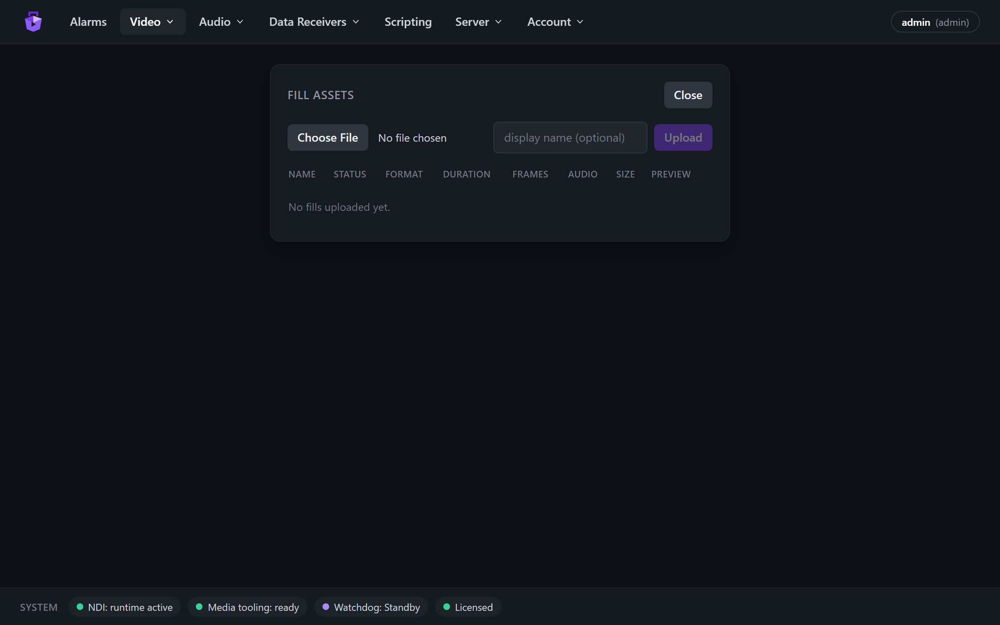
Upload any video file (an optional display name can be set); Airlock conforms
it for playout and generates a low-bitrate browser preview (needs ffmpeg — an
amber banner explains when uploads can be stored but not probed). The table
shows status (ready / uploaded / failed), format, duration, frames,
audio channels and size.

A fill cannot be deleted while a channel's static assignment or any channel's fill schedule references it — the refusal names the blocking channels so you know exactly where to unassign:
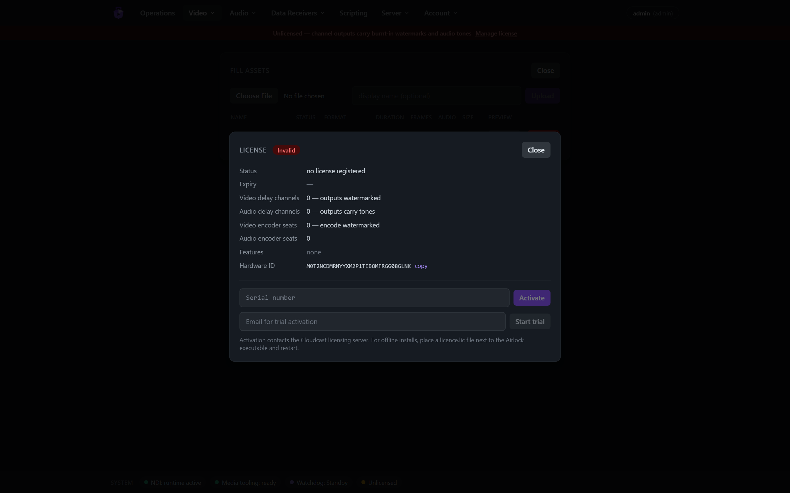
8. The encode option (SRT/SCTE-35)
The licensed ENCODE module encodes an H.264/AAC MPEG-TS over SRT, with SCTE-35 ad markers — a contribution feed that carries the same protection window as the NDI output.
Open a channel's Encode pill (admin) to configure and enable:
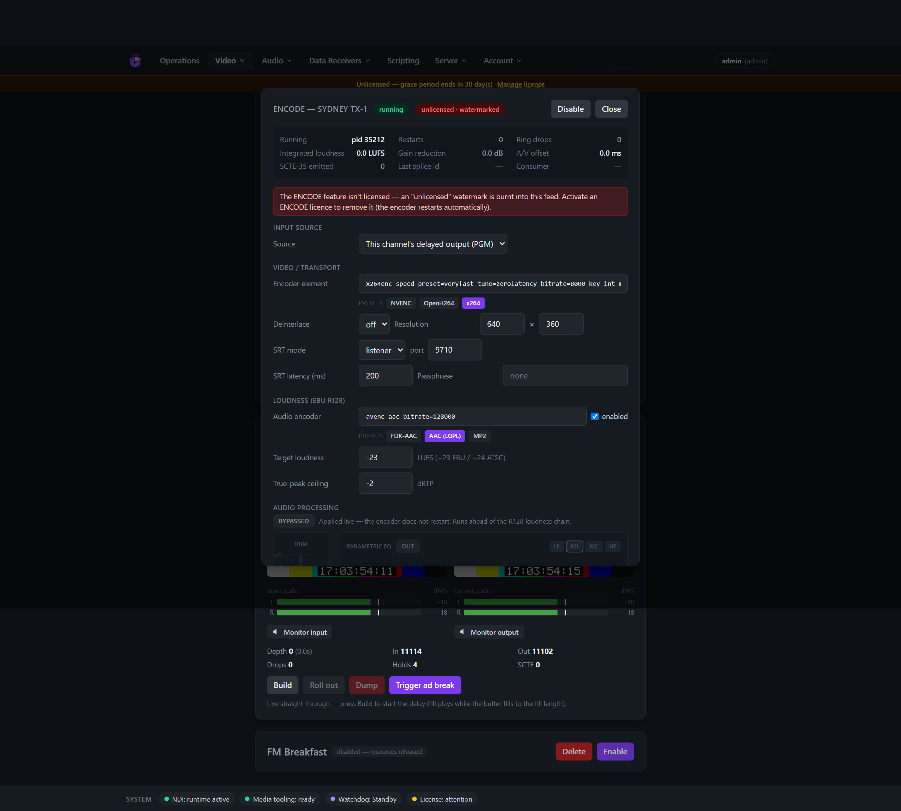
- Input source — "This channel's delayed output (PGM)" (the default) or "External NDI source": any NDI source encoded directly, bypassing the delay. Raster and framerate lock from the source's first frame (the encoder restarts once when they differ from the last known format).
- Video / transport — GStreamer encoder element with presets NVENC (hardware), OpenH264, x264 (software), or any custom element string; deinterlace; output resolution; SRT mode (listener or caller + host), port, latency, optional AES passphrase (write-only).
- Loudness (EBU R128) — audio encoder element (FDK-AAC / AAC (LGPL) / MP2 presets), target loudness (−23 LUFS EBU / −24 ATSC) with a true-peak ceiling; a loudness servo and limiter keep the feed compliant, and A/V alignment is automatic (an offset beyond ±5 ms raises an alarm).
- Audio processing — the same trim/EQ/compressor strip as the channel chain (§5), applied to this encoder's audio only, ahead of the loudness chain. In circuit / Bypassed toggle; applied live without restarting the encoder; its GR meter reads the encoder's own stage.
- SCTE-35 — enabled flag, PID, null-packet interval.
Saving the config sections restarts a running encoder. The status grid shows the child process pid, restarts, ring drops, integrated loudness, gain reduction, A/V offset, SCTE-35 count and consumer heartbeat.
The encoder runs as a supervised child process per channel — an encoder
crash never affects the NDI programme output; the supervisor restarts it and
raises/clears ALARM_ENCODE_DOWN.
Video → Encoders shows one card per enabled encoder with a live output preview (the watermark is visible on unlicensed feeds), loudness/A-V/drops/ SCTE stats, its licence seat state, and Assign/Release seat buttons (admin); the cog in the card header opens the Encode modal. The Operations dashboard mirrors these as read-only tiles.
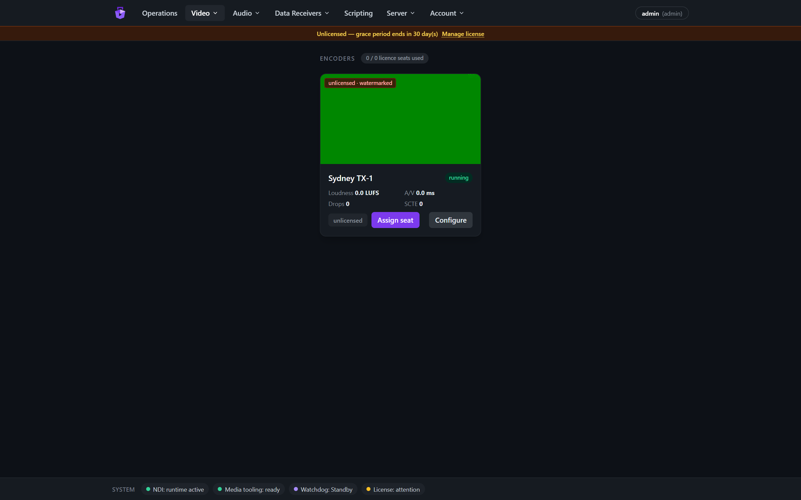
9. Audio profanity delay
Audio channels are broadcast profanity delays on a sound-device pair, modelled on long-serving industry practice: the delay builds by playing programme slightly slow (or by inserting fill) and exits slightly fast (or jump-cuts), with equal-power crossfades so nothing clicks. They live on Audio → Delay channels:
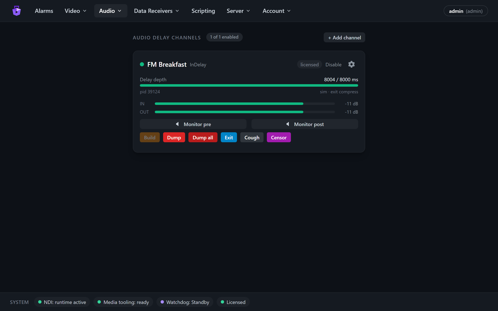
States: Idle (grey) → Building (amber) → InDelay (green) →
Exiting (sky) → Idle. The card shows a depth progress bar
(current / configured ms), the child process pid and restart count, backend
summary, IN/OUT level meters, and the command row:
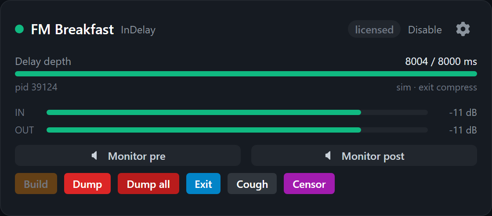
The command set
| Command | Effect |
|---|---|
| Build | Start building the delay (Idle only). |
| Dump | Discard the configured dump segment from the buffer — the write pointer rewinds; if less than 20% of the delay would remain, it escalates to a full dump. Dumped audio is captured to WAV in Dump clips. |
| Dump all | Flush the whole buffer to true-zero depth (with a softening fade). |
| Exit | Leave delay per the exit mode — compress (drain fast) or rollout. |
| Cough | Momentary kill/re-arm. |
| Censor | Overwrite the about-to-air span with tone/silence/file — depth is unchanged (nothing is removed, unlike Dump); repeated presses extend the region; a configurable pre/post bracket widens it. |
Held cough/censor (from GPI or the API's on/off pairs) carries the same stuck-on protection as the video censor: level reconciliation corrects a lost release edge, and the hold timeout auto-releases a censor whose off never arrives. Video channels have their own censor with the same model — see §4.
Below the meters, Monitor pre / Monitor post listen to the channel in the browser — pre is the input as captured, post is the delayed on-air output (same Opus/WebSocket mechanism as the video cards; listen-only, so every role gets it).
Configure — device, delay and censor tabs
The cog in the card header opens the four-tab Configure modal (admins can also rename the channel at the top of it). Configuration changes hot-apply to the running delay — saving no longer interrupts audio or resets the depth; only device/topology changes (backend, device, channel assignments, sample format, growing the delay beyond the allocated ring, or assets the child didn't start with) restart the child, and the restart reason is logged.
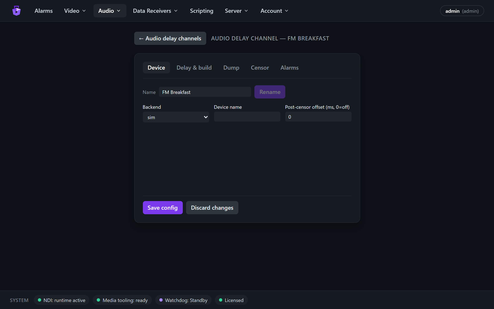
Device — backend
asio(Windows; e.g. the Axia IP-Audio driver),alsa(Linux) orsim(no hardware — demo/test). With ASIO, a Device dropdown lists the installed drivers and Main input / Main output offer the driver's named channel pairs (Axia Livewire source names collapse to one entry, e.g.1–2 · Livewire 1); alsa/sim fall back to numeric channel offsets. Optional post-censor offset (an extra-delayed clean output on the pair above the main pair) and Rollout return channel (the mix-minus return pair — see below).Delay & build — delay size (ms), build/exit rates (%), exit mode (
compress/rollout), build mode (expand= stretch live,insert= play fill), fill strategy (squeeze= time-stretch the asset to exactly the build window, orsilent), default fill asset. With exit moderollout, Rollout mix-minus return + Return overlap (ms) enable a separate studio return output during rollout: the retiring delay buffer drains onto the return pair minus the live input (N-1), so the presenter hears the tail of the delayed programme without hearing themselves — the main output still takes the clean jump cut.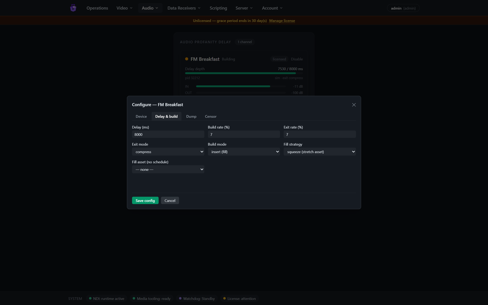
Dump — dump size (ms, 0 = all), dump strategy (
dump= discard, orcensor= replace with a file), build after dump (disabled= hold the reduced depth, or rebuild automatically after dump / dump-all / both), censor file.
Censor — strategy (
tone/silence/file), bleep frequency, censor file, censor size, pre/post bracket (ms).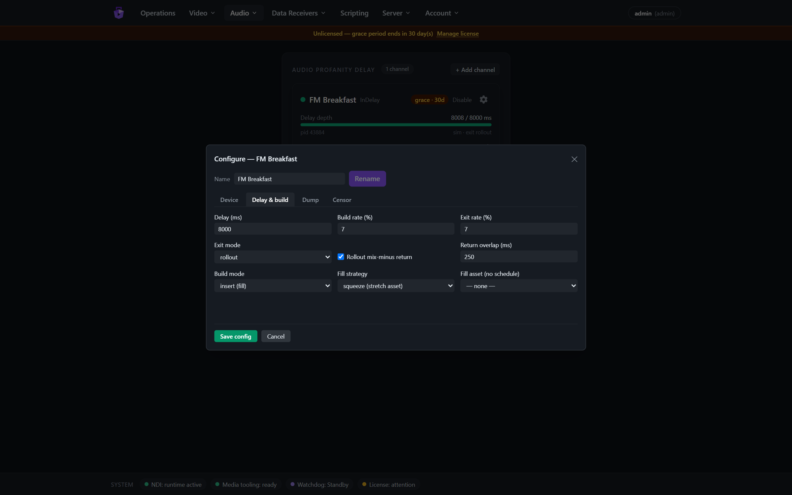
Fills and dayparted schedules
The audio fill library (MP3/WAV uploads, conformed to 48 kHz stereo) and the
dayparted fill schedules live on Audio → Fills & schedules — with
build mode insert + fill strategy squeeze, matching schedule rows
(fill × days × time window) are round-robined at build time. The matching
censor schedules (which censor file plays, by time of day) are on
Audio → Censor schedules and apply with dump strategy censor. Audio
cards link across with Fill schedule → / Censor schedule → when their
configuration makes those pages relevant.
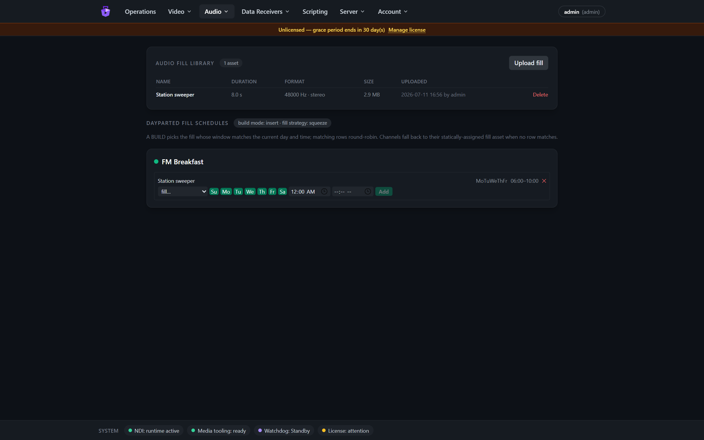
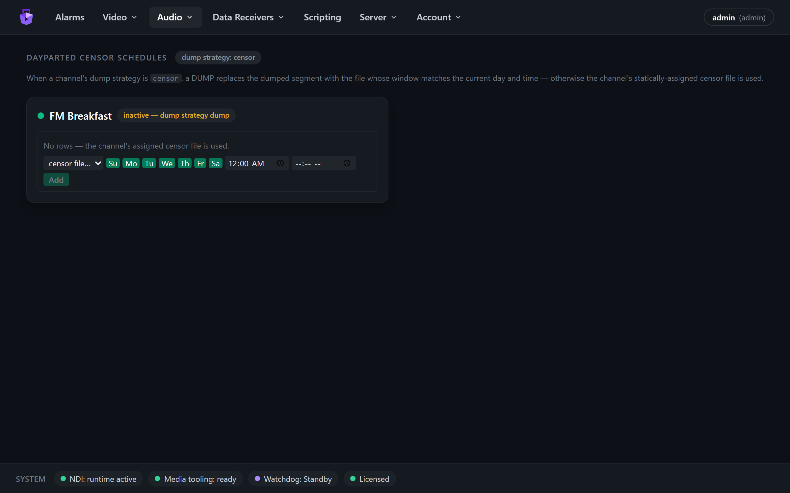
Post-delay cough/censor
Installations using the extra-delayed post-censor output (Device tab →
post-censor offset) get a second protection point after the main delay:
held cough and censor on that output. These have no web buttons — they are
driven from hardware GPI (coughpost / censorpost mapping commands,
held-only: active while the pin is held) or REST (coughposton/off,
censorposton/off), with postCoughActive / postCensorActive GPO lamps
(§10).
Audio channels take the same seat/watermark model as video: an unseated audio
channel plays a ~1 s tone burst every 30 s on its output
(§14). Like the encoder, each audio channel runs as a
supervised child process — a driver crash can't take the server down
(ALARM_AUDIO_DOWN while it restarts). Audio commands are also available
over TCP, GPIO and scripting, and audio DUMPs land in Dump clips as WAV.
10. Axia Livewire GPIO
Data Receivers → Axia GPIO integrates Livewire GPIO nodes (xNodes etc.) so hardware panels drive the delay and lamps follow its state. Four tabs:
Devices (admin) — add nodes by name/IP/port (default 93; password optional — passwordless nodes are fully supported). The table shows connection state, discovered capabilities (GPI/GPO counts, sources/ destinations) and whether GPI simulate-writes are supported.

Live GPIO — pick a device to see the live pin grid (5 pins per port, green = high; the display is the node's confirmed state). Operators can simulate a GPI press on writable devices, and manually toggle GPOs — toggling a pin owned by a status mapping prompts for an audited override (the mapping is suspended, the pin gets an amber ring and a ⟳ release action). A warning banner appears while the device is not connected (pin state may be stale):
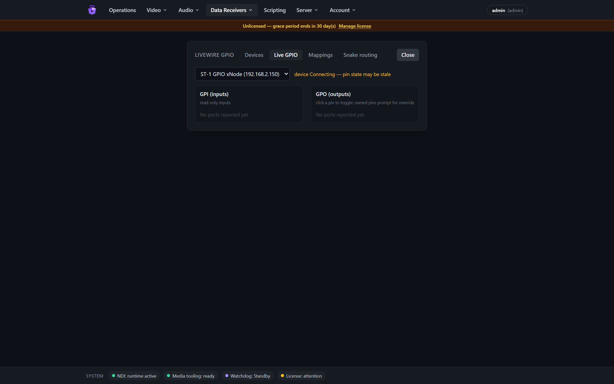
Mappings (admin) — the wiring between pins and channels. Both tables lead with a Live lamp per row (green glow = active, dim = inactive, hollow ring = no live state — device unconfirmed or a momentary event source), so you can watch a mapping fire without leaving the page. The channel pickers are grouped into video/audio, and the command/source lists only offer what the selected channel's kind supports (the server refuses a mismatch outright):

- GPI → channel control (stackable): device/port/pin → channel + command.
Video commands
build | rollout | dump | trigger(adbreak) | censor | censorpost | forcecensoroff; audio commandsbuild | dump | dumpall | exit | exitcompress | exitrollout | cough | censor | forcecensoroff | coughpost | censorpost; and delayed relayspulse1..10/static1..10— a contact closure that re-emerges on a matching GPO source delayed by the channel's current depth, in sync with the delayed programme (DUMP cancels relays in the discarded span). Trigger edge: falling (default — momentary active-low is the broadcast norm, and means reconnects can never replay commands), rising, level high/low, or held (on/off) — the command is active while the pin is held and releases with it (offered for the cough/censor family; the post-output pairs are held-only). Held mappings are level-reconciled: the resolver fires whenever the pin's confirmed level disagrees with the last state it commanded, so a release edge lost to a dropped connection is corrected from the reconnect's seed indication instead of leaving a censor latched on — with the per-channel hold timeout as the final safety net. Adding a device offers a default template: port n pins 1–4 = channel n Build / Rollout / Dump / Trigger. - GPO ← channel status (one enabled mapping owns each pin):
- level sources —
inDelay(the canonical "we are delaying" lamp — Building ∪ Delayed ∪ RollingOut),stateBuilding/stateDelayed/stateRollingOut/stateLive,serverAlarm,delaySafe(depth ≥ one dump window),delayFull/delayEmpty,depth10…depth100(depth deciles — e.g. drive a 10-LED depth ladder),coughActive/censorActive/postCoughActive/postCensorActive, andstatic1..10; - event (pulse) sources —
dumped(one pulse per DUMP, video and audio),dumpedAll,built,wentLive, andpulse1..10. - Mode
heldorpulse(default 100 ms).
- level sources —
GPI commands land on the same audited command queue as the web console and TCP (50 ms per-channel debounce; DUMP is exempt from debounce).
Snake routing (admin) — continuously re-asserted GPI→GPO follows across devices (source node pins → destination node pins with an offset). Heed the warning: snake mode overrides any other routing controller (e.g. PathFinder) on those pins.

11. Data receivers and delayed data
Data Receivers ingests line- or chunk-framed data streams (now-playing metadata, tickers, scoreboards…) and can delay them through a channel so the data re-emerges in sync with the delayed programme.
Receiver kinds: TCP Server (listens), TCP Client (dials out, with optional on-connect and keep-alive messages), UDP Server. Each has raw or line framing, optional per-receiver file logging (directory and retention set in Server settings), state pill, traffic counters and connected-client list:
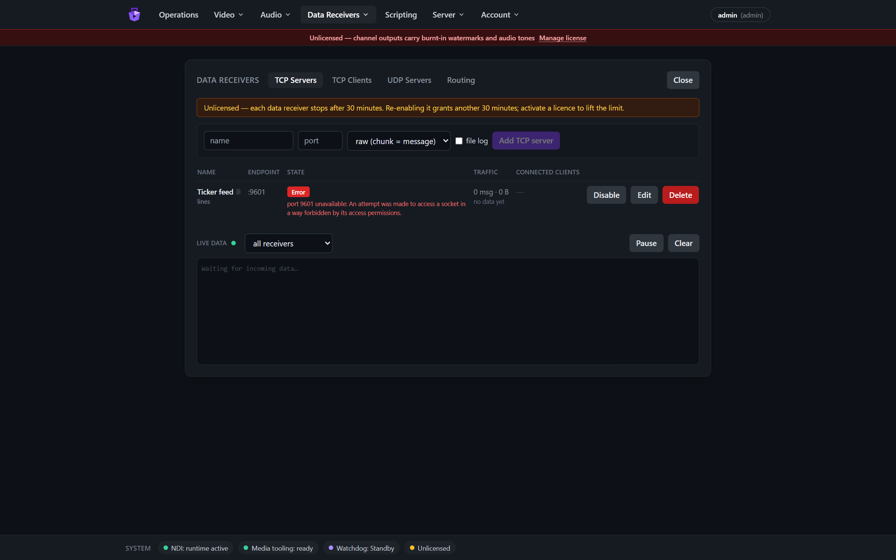
The Live data log at the bottom streams traffic in real time — received
messages (⇢), delayed releases (⇠ released, green) and connection events
— filterable per receiver, with Pause and Clear.
The Routing tab binds a receiver to a delay channel (video or audio;
or "passthrough" for no delay) plus an optional fixed offset, and fans out to
sends: TCP send, UDP send, or back out via an existing TCP receiver's
connections. Queue counters show queued · sent, plus dumped — a DUMP on
the channel cancels the queued messages from the dumped span so suppressed
content's metadata never leaks:
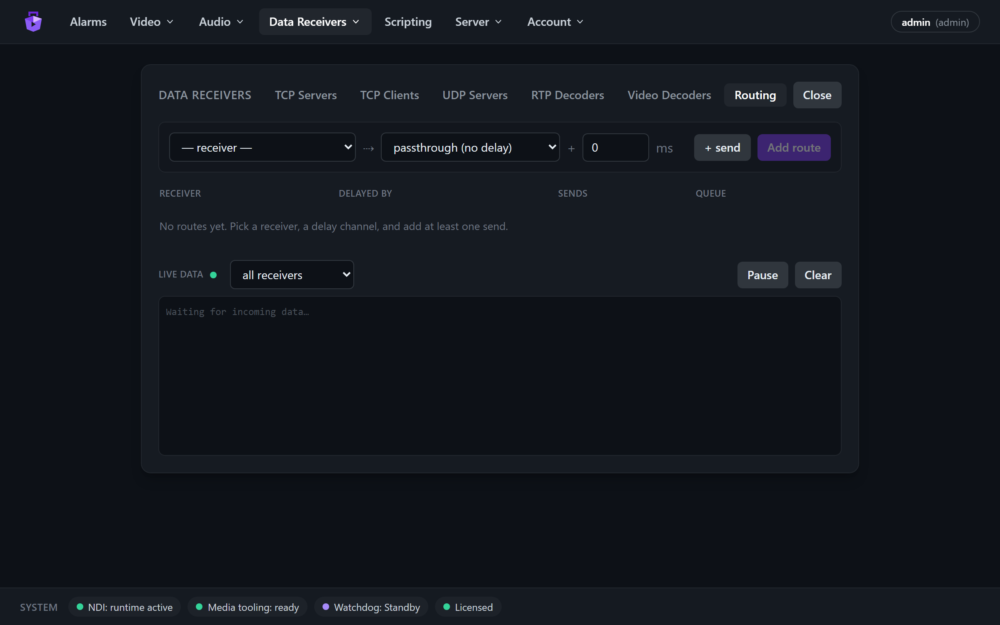
Incoming data can also fire scripts (dataReceived, dataClientEvent,
dataDelayed triggers — §12).
Unlicensed servers: each enabled data receiver runs for 30 minutes at a
stretch, then is disabled (audited as RECEIVER_UNLICENSED_TIMEOUT, with an
alert email). Re-enabling it grants another 30 minutes; activating a licence
lifts the limit entirely. An amber banner on the panel states exactly this
while the server is unlicensed (§14).
12. Scripting
The Scripting view (admin only) hosts runtime automation scripts in
Lua, JavaScript or C#. Scripts run on the control plane only —
never the frame path — and everything they do passes the same command gate
and audit trail as the UI (source = script).
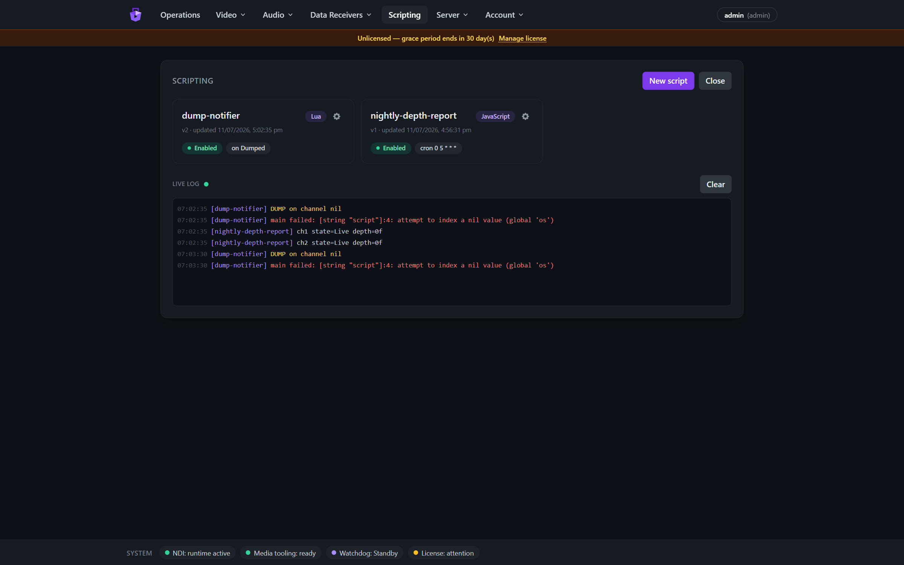
Each script card shows its language, enabled state, trigger summary and version; the cog menu offers Edit / Run now / Enable / Delete. The Live log streams script output and errors, colour-coded.
The editor (Monaco, with Ctrl-Space autocomplete for the air host API)
binds a script to a trigger: manual, startup/shutdown,
channelEvent (EnteredBuilding/EnteredDelayed/EnteredRollingOut/
ReturnedToLive/Dumped, optionally scoped to a channel), audioEvent,
encoderEvent, gpi, timer, schedule (cron), or the data triggers.
The Examples dropdown inserts a worked, compile-tested starting point
per language — timer + persistent counter, cron schedule, delay status
watchdog, GPI dump-all, parsing JSON/XML/binary payloads from data
receivers (also collected in
docs/scripting-examples.md).

Validate checks the script; Save version creates an immutable version, with an optional commit message stored against it. Clicking a history chip (v1, v2, …) opens a read-only side-by-side diff of any two versions — rollback is inspect-then-activate via the Activate vN button in the diff header:
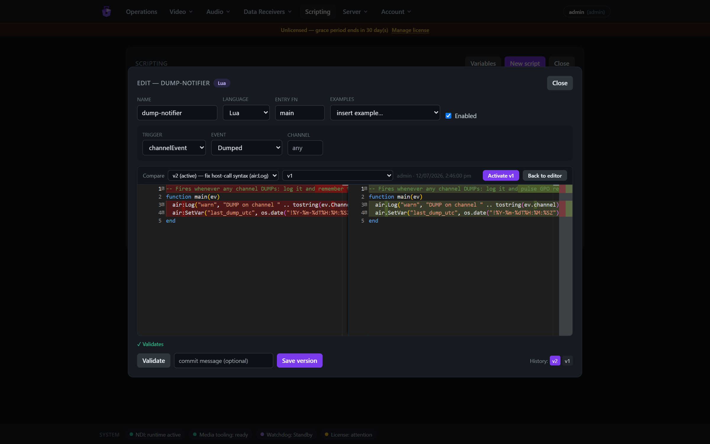
Persistent variables
Scripts have no memory between runs by design (each invocation is a fresh, ~1-second-budget call). Persistent variables are the sanctioned way to carry state: a single key/value store that is
- shared by all scripts in all three languages — one flat namespace, so a
Lua script's counter is readable by a JavaScript script (adopt a naming
convention like
heartbeat.countto keep things tidy); - persistent — the values are database rows, so they survive script edits, disables and full server restarts;
- replicated — on a redundancy pair the store syncs to the backup, so a takeover keeps your state.
The host API (Lua uses colon syntax, JS/C# dot/bare):
| Call | Returns |
|---|---|
air:GetVar("name") |
the value as a string, or nil/null when absent |
air:SetVar("name", value) |
— (creates or overwrites) |
air:GetNumber("name") |
the value parsed as a number, or nil/null when absent or unparseable |
air:GetBool("name") |
true/false (accepts true/false, 1/0, yes/no, on/off), else nil/null |
air:DeleteVar("name") |
— (no-op when absent) |
The typed getters return nil rather than throwing, so defaults compose naturally:
-- Bind with trigger "timer" (e.g. every 5000 ms).
function main(trigger, channel, event, args)
local n = (air:GetNumber("heartbeat.count") or 0) + 1
air:SetVar("heartbeat.count", tostring(n))
air:Log("info", "tick " .. n .. " — video ch1 is " .. air:State(1))
end
Values are always stored and transported as text — the type column in
the UI (string · number · bool · json) is a validation hint for the editing
form, not a storage format. Every write is audited: script writes as
SCRIPTVAR_SET with source script and the script's name as principal,
console/REST writes with source rest and the signed-in user. Reads are not
audited.
The Variables button on the Scripting page opens the store for
inspection and editing (admin) — add/update with per-type validation, edit
or delete any row, see when each was last written. The script editor
autocompletes existing variable names whenever the cursor is inside the
string argument of GetVar/SetVar/GetNumber/GetBool/DeleteVar:
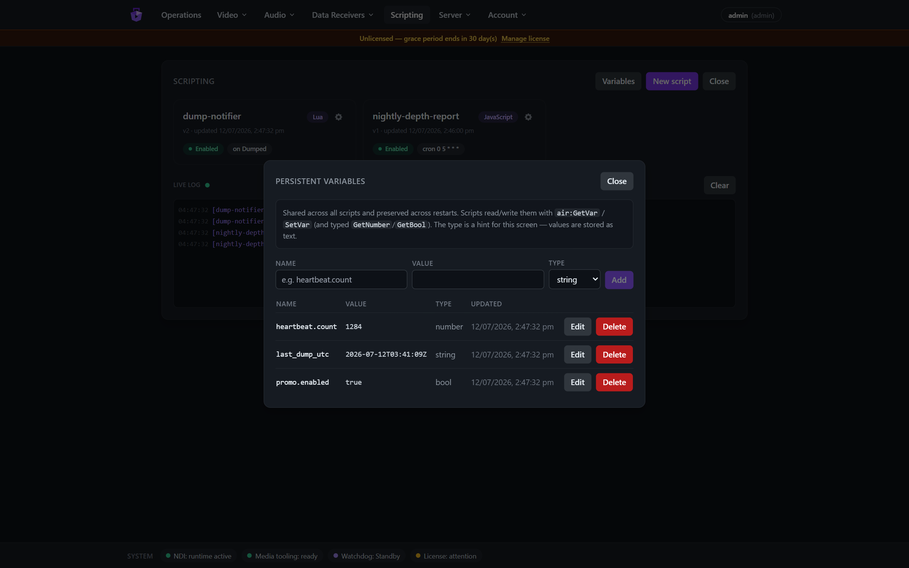
The host API covers channel transport and status, audio-delay commands, encoder control, SCTE triggers, GPIO, persistent variables, logging and alerts. There is deliberately no sleep — use timer/schedule triggers; each invocation has a 1 s timeout. Lua and JavaScript are sandboxed; C# runs full-trust — treat it like server-side code. Full reference and examples: docs/scripting-guide.md.
Unlicensed servers: each enabled script runs for 30 minutes at a
stretch, then is disabled (audited as SCRIPT_UNLICENSED_TIMEOUT, with an
alert email). Re-enabling grants another 30 minutes; a licence lifts the
limit (§14). The Scripting panel shows an amber banner while
the limit is in force.
Note the host-call syntax in Lua is colon-style:
air:Log(...),air:Build(1)— while JavaScript and C# use dot-style (air.Log(...)).
13. Server administration
13.1 General settings (Server → General)
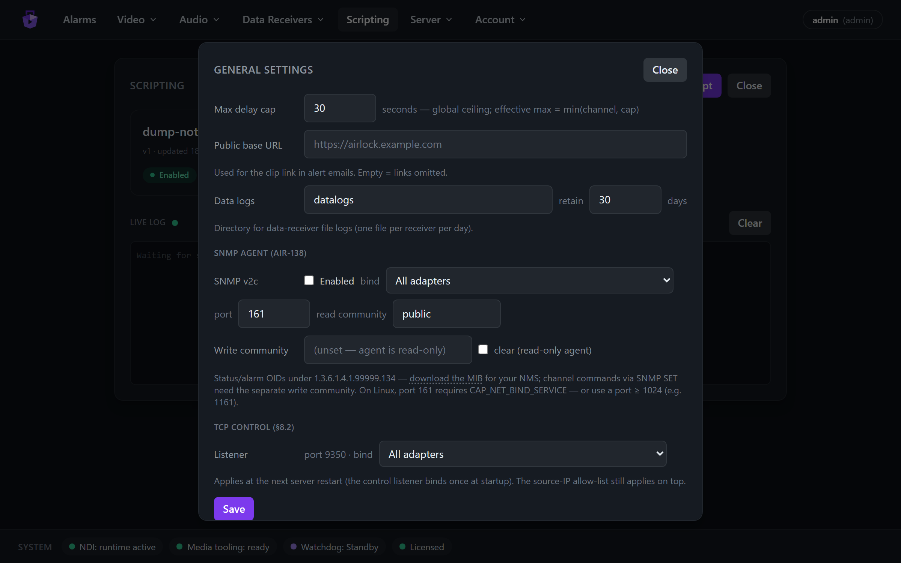
- Max delay cap — global ceiling in seconds (1–300; default 30). A channel's effective window is min(its own max, this cap).
- Public base URL — the host used in alert-email clip links (empty = links omitted); also the base for the OIDC redirect URI.
- Data logs — directory and retention (days) for data-receiver file logs.
13.2 Email (Server → Email (SMTP))
Alert email for DUMP notifications (and system alerts such as licence and runtime-limit warnings): server, port, security (STARTTLS 587 / SSL 465 / none), optional auth (password write-only), From address/name, and a Send test email button.
13.3 Authentication (Server → Authentication)
External sign-in; the internal login always remains as break-glass.
- LDAP / Active Directory — server/port + security (LDAPS/StartTLS/none),
service bind DN + password, base DN, user filter (default
(sAMAccountName={0})), role mappings (role: group-DN, one per line, first match wins), default role or "refuse unmapped users". - OIDC SSO (Entra ID / Okta / Keycloak…) — authority, client id/secret,
scopes, role claim (default
groups), role mappings, default role, button label. Register the redirect URI<public base URL>/api/auth/oidc/callbackwith the IdP.
How the OIDC pieces fit (applies to any provider): Airlock runs the standard
authorization-code flow against the provider's discovery document
(<authority>/.well-known/openid-configuration) and reads everything from
the ID token. The signed-in username is the token's preferred_username
claim, falling back to email then sub. Role mapping looks at every value
of the configured role claim and applies the mapping lines in order —
role: value, exact match (case-insensitive), first match wins; if
nothing matches, the user gets the default role, or is refused when the
default is "refuse unmapped users". Directory users appear under Server →
Users after their first sign-in, re-deriving their role at every login
unless an admin pins it (§13.4).
Worked example — Microsoft Entra ID (Azure)
In the Entra admin center (entra.microsoft.com):
- Identity → Applications → App registrations → New registration. Name
it (e.g. "Airlock"), keep Accounts in this organizational directory
only, and under Redirect URI pick platform Web and enter exactly
the URI Airlock shows at the bottom of its Authentication panel:
https://<public base URL>/api/auth/oidc/callback. - From the app's Overview, note the Application (client) ID and the Directory (tenant) ID.
- Certificates & secrets → New client secret — copy the secret's Value immediately (it is only shown once).
- Token configuration → Add groups claim → tick Security groups for the ID token. Entra emits group object IDs (GUIDs), not names — copy each relevant group's Object ID from Groups → your group → Overview. If your users belong to many groups, choose "Groups assigned to the application" instead and assign just the Airlock-relevant groups under Enterprise applications → Airlock → Users and groups — this keeps the claim small (Entra drops the claim entirely for users in 200+ groups) and doubles as an access list.
In Airlock (Server → Authentication → OIDC SSO):
| Field | Value |
|---|---|
| Authority | https://login.microsoftonline.com/<tenant-id>/v2.0 |
| Client ID / secret | from steps 2–3 |
| Scopes | openid profile email (the default) |
| Role claim | groups |
| Role mappings | admin: <object-id of your admins group>operator: <object-id of your operators group> — one per line |
| Default role | viewer, or "refuse unmapped users" to admit only mapped groups |
| Button label | e.g. Microsoft |
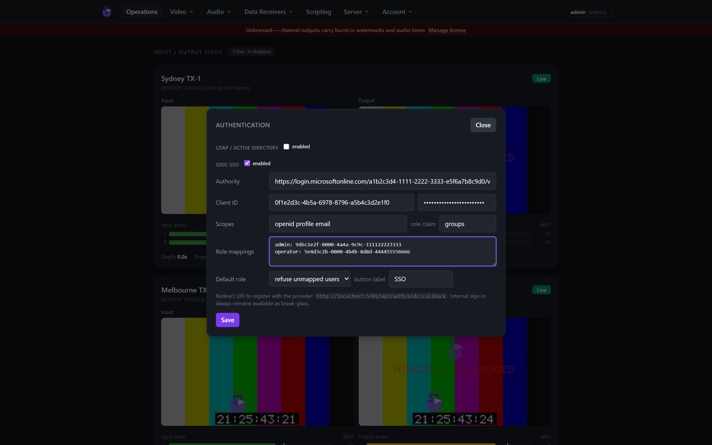
Users sign in with the login button and land under their UPN (Entra's
preferred_username). If sign-in fails with "no role mapping matched",
the group claim isn't reaching the ID token — re-check step 4 and that the
user is in an assigned group.
Worked example — Google Workspace
Google's ID tokens do not carry a groups claim, so Workspace group
membership can't drive roles directly — map on the email claim (or the
hd hosted-domain claim) instead, and use the sticky role override in
Server → Users for individual promotions.
In the Google Cloud console (console.cloud.google.com), in any project:
- APIs & Services → OAuth consent screen — set User type Internal. This restricts sign-in to accounts in your Workspace domain and is doing real access control: with an External consent screen, any Google account could sign in and would receive your default role.
- APIs & Services → Credentials → Create credentials → OAuth client ID
— application type Web application, and add the Airlock callback as
an Authorised redirect URI:
https://<public base URL>/api/auth/oidc/callback. Copy the client ID and secret.
In Airlock (Server → Authentication → OIDC SSO):
| Field | Value |
|---|---|
| Authority | https://accounts.google.com |
| Client ID / secret | from step 2 |
| Scopes | openid profile email (the default) |
| Role claim | email |
| Role mappings | admin: dan@station.exampleoperator: mcr@station.example — one line per person |
| Default role | viewer (every Workspace user can watch), or "refuse unmapped users" |
| Button label | e.g. Google |
Users land under their email address. Two workable patterns for roles:
- Per-person mappings (above) — explicit, auditable, but a list to maintain.
- Domain default + pinned exceptions — set role claim
hd(Google's hosted-domain claim) with a single mapping likeoperator: station.exampleso everyone in the domain operates, then promote the few admins via the override pin in Server → Users (§13.4); the pin survives every login.
Whichever provider you use, the internal username/password login stays available as break-glass — an IdP outage can't lock you out of the console.
13.4 Users (Server → Users)
Full user management lives in the console:
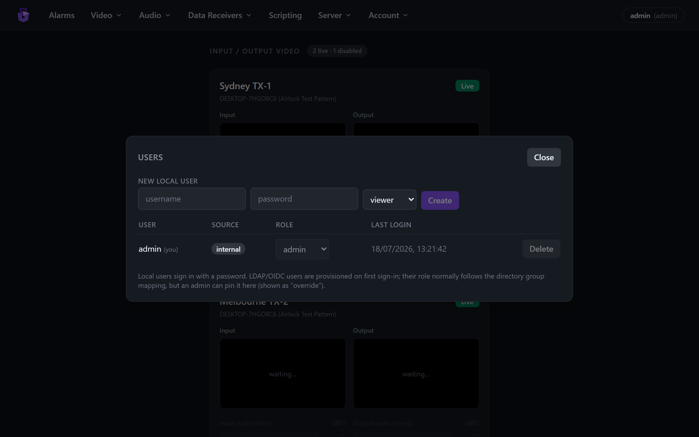
- Local users — create with username/password/role; change roles from the per-row dropdown; delete. You cannot change your own role or delete your own account. Everyone can change their own password via Account → Change password.
- Directory users (LDAP/OIDC) are provisioned automatically on first sign-in, tagged with their source. Their role normally follows the directory group mapping on every login — but an admin can pin it: set a role from the dropdown and it becomes a sticky override (tagged override ✕; the directory mapping is ignored until you click the ✕ to hand the role back, which re-applies at the user's next login). Untouched directory users show a grey directory tag.
- Role changes are audited (
USER_ROLE_SET/USER_ROLE_MANAGED) and users replicate to redundancy backups.
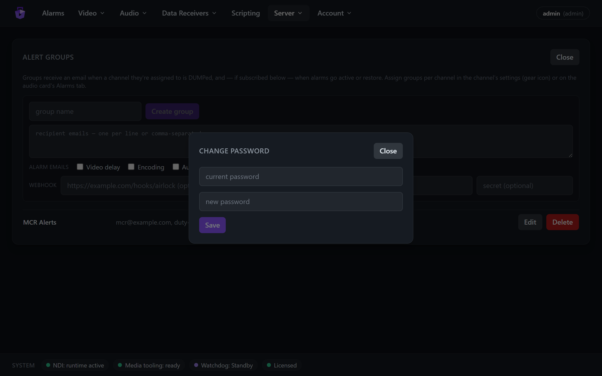
13.5 Audit and backup
The audit log is append-only and viewable at the bottom of Operations (full
history via GET /api/audit?from&to&ch&skip&take). A checkpointed copy of
the configuration database can be downloaded by admins from
GET /api/server/backup (API-only).
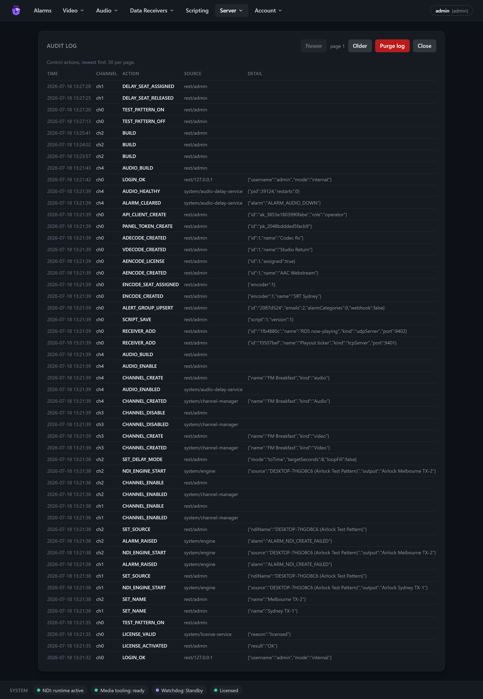
13.6 Watchdog
A separate watchdog process monitors the server's heartbeat and can take over
the NDI output names in a failover pair on the same host. Its state shows
in the footer. Fail-back is operator-confirmed by default
(POST /api/server/failback, operator role) so a recovered primary never
glitches live programming unannounced. For a second, geographically separate
server, see Redundancy below — the two mechanisms are independent.
13.7 Redundancy (primary/backup)
Server → Redundancy configures a warm-standby pair: a primary (master)
serves configuration, users and media to one or more backups over a
/ws/sync link secured by a shared sync key (generated once on the
primary — "shown once — paste into each backup"). Fill and audio-fill
assets mirror automatically.

- Roles are gated by licence feature flags: only a licence carrying PRIMARY can serve backups, only one carrying BACKUP can join as a backup (the radios are greyed otherwise — the screenshot above shows a standalone instance). The role is also enforced by the licence itself: running under a redundancy role the installed licence doesn't permit makes the licence invalid until the role or the licence is corrected (§14). Role and sync settings are admin; takeover/rejoin are operator actions.
- A synced backup is locked: the whole console is read-only (buttons
greyed, REST mutations refused, TCP verbs answer
ERR … LOCKED), and its alert emails, GPO drives and data-route sends are suppressed so nothing fires twice. Its NDI outputs run under a configurable name suffix. - Master lost: the backup unlocks local control for a sealed 14-day window (staged warning emails; banner countdown). Local changes are discarded when the master returns. At expiry controls re-lock — except DUMP and ROLLOUT, which always remain available.
- Take over — adopt primary NDI names (operator-confirmed, only while the master is unreachable): the backup renames its outputs to the primary's NDI names so downstream receivers cut over. Rejoin as backup reverts the names, re-locks and resyncs (the master's configuration wins).
- The backup's state is always visible: the footer Redundancy pill, the banners, and the panel's live status (with the primary's Connected backups table on the master).
13.8 API access (Server → API access)
External systems call the same REST API as the console, authenticating with the OAuth2 client-credentials grant. The API access panel creates named API clients, each bound to a role (viewer/operator/admin); the client secret is shown exactly once at creation — copy it then, only a hash is stored. Clients can be disabled or deleted (deleting one makes its integrations fail to obtain tokens immediately). Open Swagger ↗ jumps to the interactive API reference.
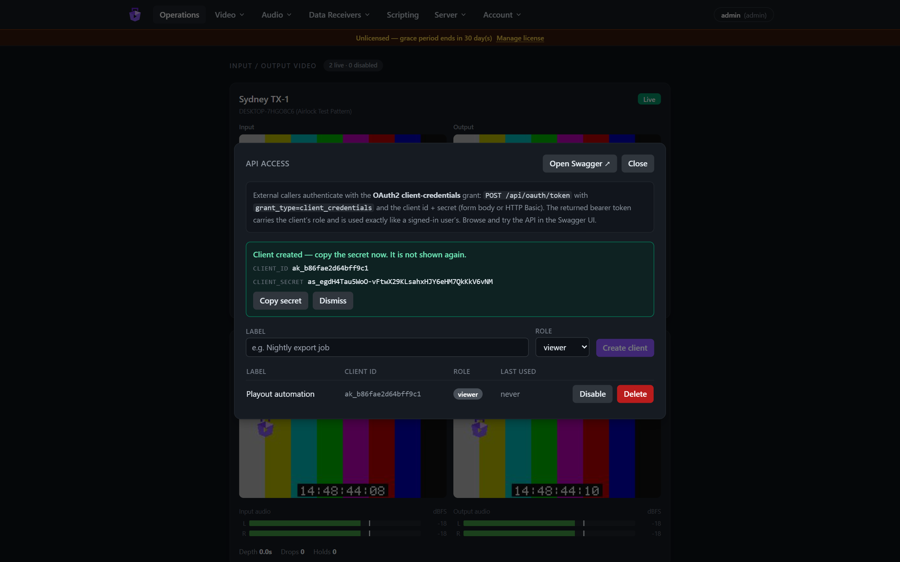
Client management is admin (and master-only on a redundancy pair, though the clients replicate and tokens keep working on a locked backup — integrations survive takeover). Details of the token flow: §15.
14. Licensing
The licensing model in one sentence: a licence buys clean outputs and unlimited runtime — it never gates the delay itself. BUILD, ROLLOUT and DUMP work identically on licensed and unlicensed servers; what changes is watermarking and (for receivers/scripts) a runtime limit.
Server → License is the control panel for all of it:
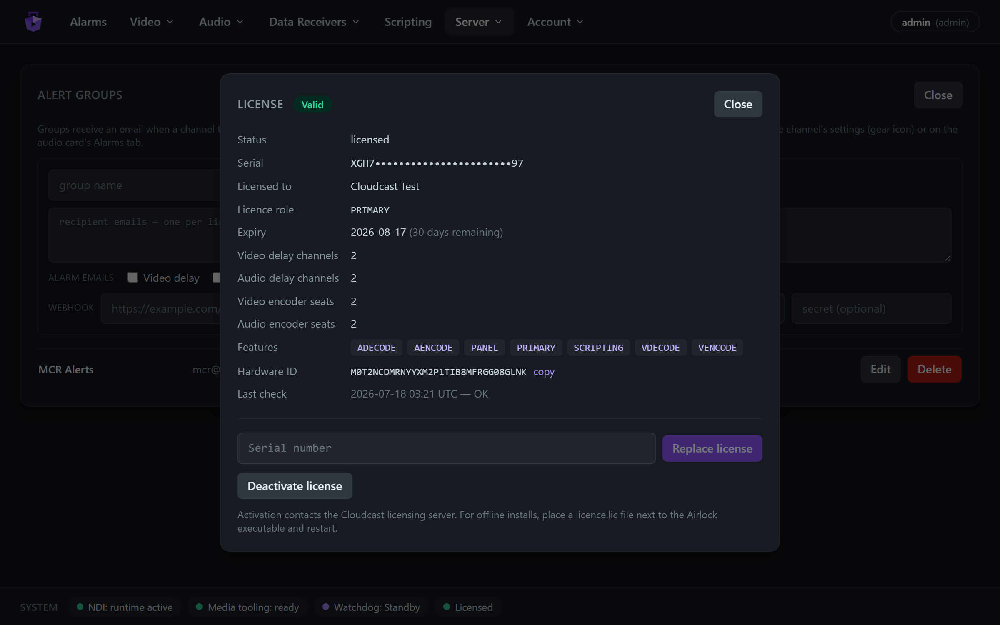
What a licence grants
Four independently licensed capabilities, carried as feature strings on the
licence: video delay channels (CHANNELS=n), audio delay channels
(AUDIO=n), video encoder seats (ENCODE=n, bare ENCODE = unlimited)
and audio encoder seats (AENCODE=n) — plus boolean feature flags shown
in the Features row. Trial licences are tagged (demo) and default to
one video channel unless the trial carries explicit counts.
Two flags matter operationally: PRIMARY and BACKUP gate the redundancy roles (§13.7) — and they are enforced: a role-flagged licence used under a role it doesn't permit makes the whole licence invalid (banner: "this backup licence does not permit the primary role — change the redundancy role or activate a matching licence"). PRIMARY covers primary and standalone; BACKUP covers backup only; a licence with no role flags is unrestricted. Role-flagged licences show a Licence role row in the panel.
Activation paths
- Console, online — enter the serial, Activate (or Replace license over an existing one). Activation contacts the Cloudcast licensing server and binds to this machine's Hardware ID (shown in the panel with a copy button — quote it when requesting a licence).
- Trial — when no serial is registered, Start trial with an email address. The confirmation link in the email completes it.
- Install time — the MSI's SERIAL field (§2). The serial is parked in the registry and consumed at the service's first start; while the licensing server is unreachable it retries daily, and a definitively rejected (e.g. mistyped) serial stops retrying and raises an alert email instead.
- Offline — place a
licence.licfile next to the Airlock executable and restart.
Staying licensed: the daily check and the offline allowance
An activated server re-validates against the licensing server once a day (first check ~1 minute after startup). Three outcomes:
- Reachable and valid — nothing to see; the failure counter resets.
- Unreachable — the failure counter ticks up. The server tolerates 30 consecutive failed daily checks — roughly a month of full offline operation. The panel row reads "N consecutive failed daily check(s) (allowance 30)", the banner shows "License server unreachable (N/30 days)", and warning emails start going out in the last week of the allowance. Past 30, the licence goes invalid ("licensing server unreachable for N days") until connectivity or a manual re-activation restores it — any single successful check resets the counter to zero.
- Rejected (expired / revoked / invalid) — the licence is invalidated immediately, and the verdict sticks until a later check or re-activation succeeds.
A licence with an expiry date also lapses locally on that date regardless of
connectivity ("perpetual" licences show no expiry). Every validity
transition is audited (LICENSE_VALID / LICENSE_INVALID) and emailed once.
What unlicensed / invalid actually means
There is no grace period: from the moment a server has no valid licence (fresh install, expiry, revocation, deactivation, exhausted offline allowance, role mismatch) enforcement applies immediately —
- Every delay channel's output is watermarked: video carries the Airlock mark + "AIRLOCK — UNLICENSED" burnt into the frame (the previews show the composited output — what you see is what airs) plus periodic tone bursts on its audio; audio delay channels play a ~1-second tone burst every 30 seconds of output; encoder feeds carry "AIRLOCK — ENCODE UNLICENSED". The header banner reads "Unlicensed — channel outputs carry burnt-in watermarks and audio tones" and the licence panel's capability rows show "0 — outputs watermarked" / "0 — outputs carry tones".
- Data receivers and scripts run 30 minutes at a stretch: each enabled
receiver and each enabled script is disabled 30 minutes after it was
enabled (audited
RECEIVER_UNLICENSED_TIMEOUT/SCRIPT_UNLICENSED_TIMEOUT, one alert email, amber banners on both panels). Re-enabling an item grants it a fresh 30 minutes; there is no countdown in the UI. The delay channels themselves have no runtime limit — they watermark instead. - Nothing operational is refused: Build/Roll out/Dump, GPIO, TCP and the audio delay all keep working. The design intent is that an unlicensed Airlock is fully evaluable and fails loud, never dangerous.
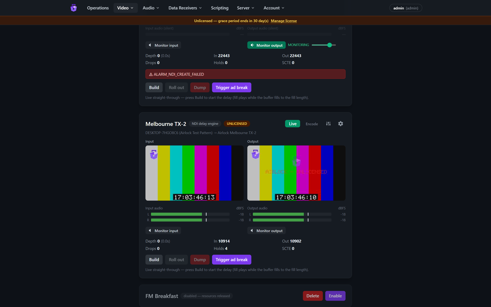
Seats
On a licensed server, the capability counts are seats that admins spread across channels: the pill next to each channel name assigns (amber UNLICENSED) or releases (grey licensed) a seat, and the Encoders page does the same for encoder seats. Seats are honoured lowest channel id first up to the licensed count — so if a replacement licence carries fewer seats than are assigned, the highest-numbered channels lose theirs (and start watermarking) first. All watermark changes take effect live, on air, within seconds — assigning a seat, activating a licence or letting one lapse never interrupts the programme; the video engine flips its watermark in place, while audio channels and encoders briefly reconfigure.
Deactivating (panel button, confirm: "Deactivate this license? Channel outputs will immediately carry burnt-in watermarks and audio tones.") drops straight to the unlicensed behaviour above.
(The redundancy backup's 14-day local-control window (§13.7) is a separate mechanism — it governs control lockout on a backup that lost its master, never watermarking.)
15. Remote control: TCP protocol and REST
TCP control (automation LAN)
A plain line-oriented TCP protocol listens on port 9350 (UTF-8, CRLF,
OK/ERR replies). It is unauthenticated by design — restrict it to the
management/automation LAN (there is an allow-list; default localhost only).
BUILD <ch> ROLLOUT <ch> DUMP <ch> TRIGGER <ch> <template> [k=v …]
DUMPALL <ch> EXIT <ch> COUGH <ch> CENSOR <ch> (audio)
STATE <ch> SUBSCRIBE <ch> PING
SUBSCRIBE streams TALLY <ch> <State> on every state change plus
ALARM <ch> <code> lines. Commands pass the same state-legality gate and
audit trail as the UI (source = tcp), so e.g. BUILD on a Delayed channel
returns ERR … ERR_INVALID_STATE. On a synced backup, mutating verbs answer
ERR <ch> LOCKED … (after the 14-day window expires, DUMP/DUMPALL/EXIT/
ROLLOUT still work — everything else is refused).
REST, OAuth2 and Swagger
Everything in the console is REST + JWT underneath (POST /api/auth/login →
bearer token). External integrations should instead use an API client
(§13.8) with the OAuth2
client-credentials grant: POST /api/oauth/token
(application/x-www-form-urlencoded, grant_type=client_credentials,
credentials as form fields or HTTP Basic) returns a Bearer token carrying the
client's role (8 h expiry; standard RFC 6749 error envelopes; rate-limited
10/min/IP; issuance is audited and keeps working on a locked redundancy
backup, so integrations survive takeover).
The interactive API reference lives at /swagger (OpenAPI JSON at
/swagger/v1/swagger.json) — browsable without signing in; "Try it out"
needs a pasted bearer token or the built-in OAuth2 flow in the Authorize
dialog:

Highlights: GET /api/channels,
POST /api/channels/{n}/build|rollout|dump|trigger (dump requires body
{"confirm": true}), audio actions
POST /api/channels/{n}/audio/{action} (build, dump, dumpall, exit,
exitcompress, exitrollout, cough on/off, censor on/off, forcecensoroff, and
the post-delay coughposton/off / censorposton/off), audio processing
PUT /api/channels/{n}/audio-processing and /encode-audio-processing,
video censor POST /api/channels/{n}/censor/{censor|censoron|censoroff| censorposton|censorpostoff|forcecensoroff} (operator) +
GET/PUT /api/channels/{n}/censor-config (admin),
redundancy GET/PUT /api/redundancy + takeover/rejoin, API clients
GET/POST /api/api-clients, script variables GET /api/script-vars +
PUT/DELETE /api/script-vars/{name}, video fill schedules
GET/POST /api/channels/{n}/fill-schedule +
DELETE .../fill-schedule/{id} (operator), users
GET/POST/DELETE /api/users + POST /api/users/{id}/role +
DELETE /api/users/{id}/role-override (admin), ASIO discovery
GET /api/audio/devices[/{name}/channels], live mapping state
GET /api/lwrp/mappings/status, GET /api/audit, GET /api/metrics,
GET /api/server/status. WebSockets (token via ?access_token=) carry
telemetry, previews, audio monitoring and the log streams.
16. Roles and permissions
Roles are hierarchical: admin ⊇ operator ⊇ viewer. On a synced backup every operational capability is refused server-side regardless of role (§13.7).
| Capability | viewer | operator | admin |
|---|---|---|---|
| View dashboard, previews, meters, audit, clips, fills, receivers, GPIO state, licence status | ✔ | ✔ | ✔ |
| Play dump clips / fill previews; change own password | ✔ | ✔ | ✔ |
| Build / Roll out / Dump / Trigger / Censor (video) | ✔ | ✔ | |
| Listen to audio-channel pre/post monitors | ✔ | ✔ | ✔ |
| Audio delay commands and audio config/schedules | ✔ | ✔ | |
| Channel & encoder audio processing (trim/EQ/compressor) | ✔ | ✔ | |
| Enable built-in test pattern; GPI simulate; GPO toggle/override | ✔ | ✔ | |
| Watchdog fail-back (API); redundancy take-over / rejoin | ✔ | ✔ | |
| Channel create/delete/rename, source/fill/delay-mode, enable/disable | ✔ | ||
| Encode config/enable; licence seat assignment | ✔ | ||
| Fill upload/delete; clip delete; alert groups | ✔ | ||
| Server settings, SMTP, LDAP/OIDC, licence activate/deactivate, backup | ✔ | ||
| Redundancy role & sync-key configuration | ✔ | ||
| API clients (create/disable/delete); persistent script variables | ✔ | ||
| LWRP devices/mappings/routing; data receivers/routes | ✔ | ||
| Scripting (the view is hidden below admin) | ✔ | ||
| User management (Server → Users + API) | ✔ |
17. Alarms and troubleshooting
| Alarm | Meaning | Notes |
|---|---|---|
ALARM_SOURCE_LOST |
Input NDI source gone (>500 ms) | Output holds the last good frame and self-paces; Holds counter ticks. Clears on source return. |
ALARM_NDI_CREATE_FAILED |
The channel's NDI sender could not be created | Usually a sender-name collision — another sender on the network already uses Airlock <name> (e.g. a second Airlock instance that hasn't restarted its engine after a rename). Free the name, then disable/enable the channel. |
ALARM_ENCODE_DOWN |
Encoder child not running | Supervisor restarts it; programme output unaffected. Check the encoder element (e.g. NVENC on a box without an NVIDIA GPU) in the Encode modal. |
ALARM_AV_OFFSET |
Encoder A/V offset beyond ±5 ms | Realignment is automatic; persistent offset warrants investigation. |
ALARM_AUDIO_DOWN |
Audio-delay child not running | Supervisor restarts it; check backend/device name in the audio channel's Configure → Device tab. |
| Ring-full / oversized-metadata alarms | Buffer or metadata limits hit | Buffered content is never overwritten; oversized NDI metadata (>4 KB default) is dropped, not truncated. |
Quick checks, in order: the footer pills (NDI runtime present? media tooling ready? watchdog? licence? redundancy?), the banners (licence, redundancy/lockout), the alarm strip on the affected channel card, then the Audit table — every command and state change from every interface is there, including refusals and their reasons.
Manual generated against Airlock as of 2026-07-12 (main @ 53a2144, AIR-1…132). Screenshots were captured on a live instance using the built-in colour-bars + tone test source; channel screenshots showing clean (unmarked) outputs were taken on a seated configuration — an unlicensed server watermarks every output as described in §14.